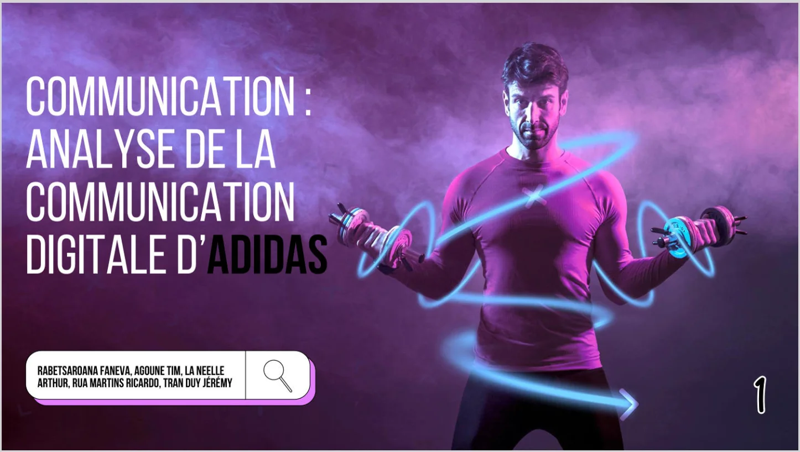
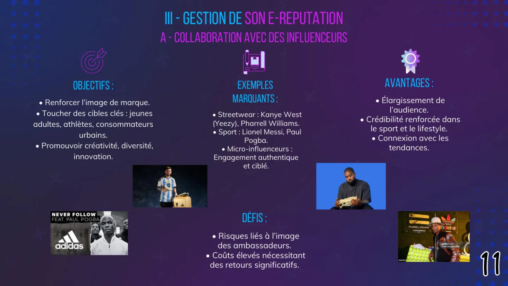

Tim Agoune
Tim Agoune01Objectif
Analyser la communication digitale d'Adidas pour comprendre comment une grande marque gère son ciblage, ses contenus, son parcours de conversion et sa réputation en ligne.
02Démarche
Nous avons mené cette étude en groupe de cinq, à partir de grilles d'analyse et de sources chiffrées, avant de la présenter en exposé. Cette étude m'a appris à situer chaque contenu dans le tunnel de conversion et à comprendre comment une grande marque adapte ses contenus et son ton à chaque plateforme.


03Moyens et outils
- Grilles d'analyse structurées : TOMSTER, funnel de conversion ;
- sources chiffrées croisées : Statista, études social media ;
- observation directe des comptes et du site de la marque.